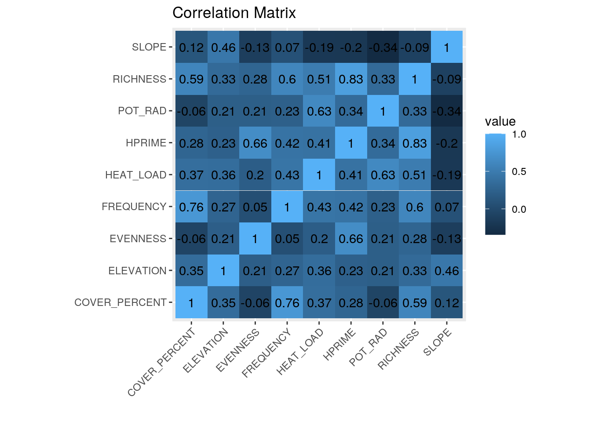
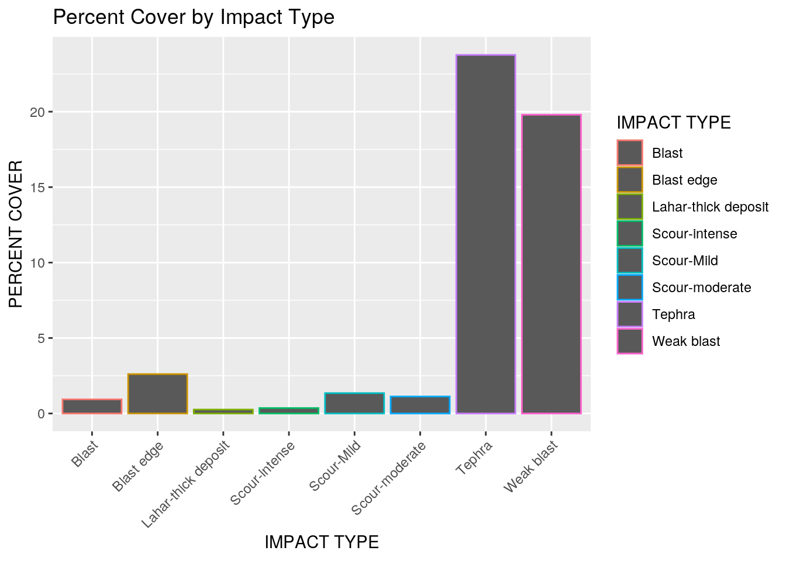
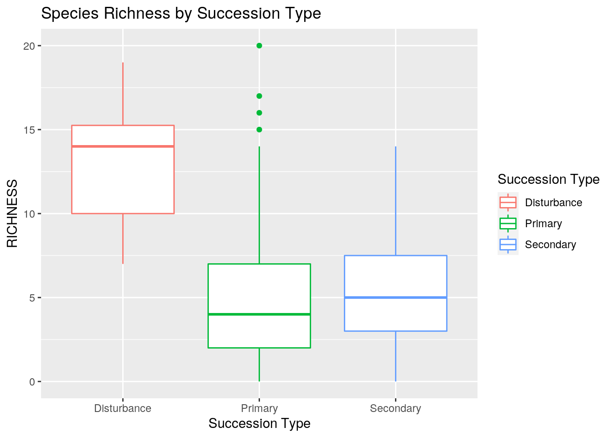
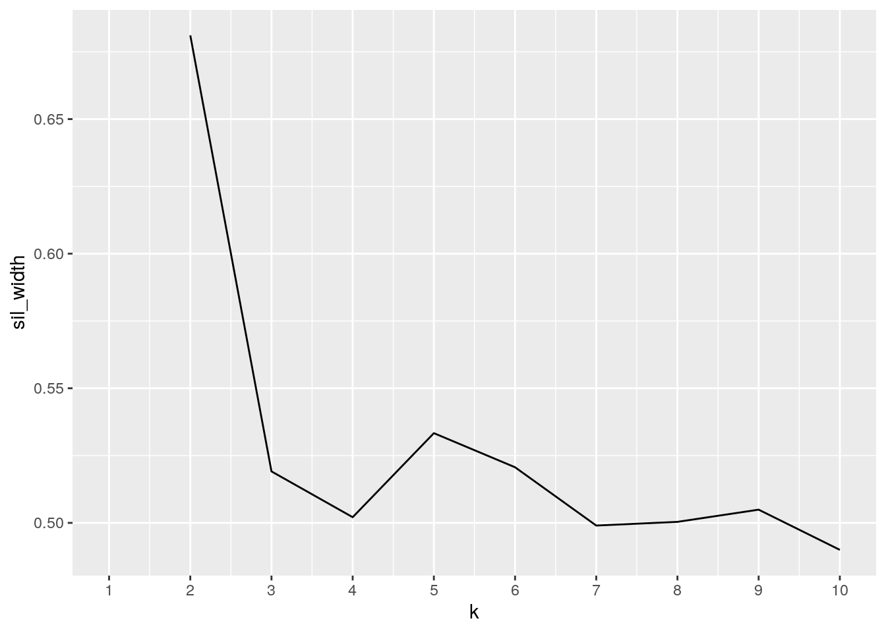
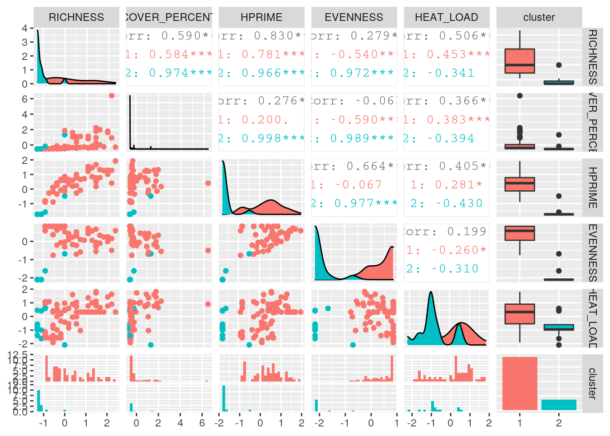
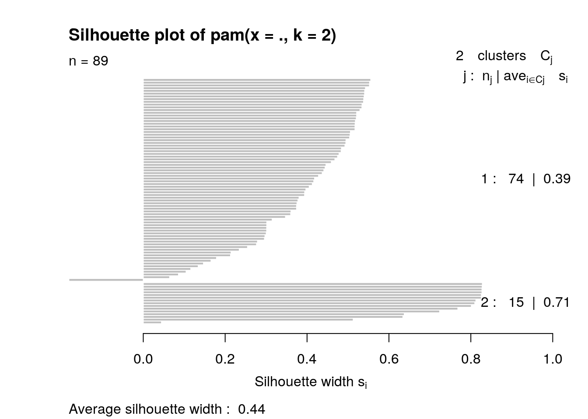

My project will use data from quadrat surveys of plant cover on Mt St. Helens from 1995 to 2009. I will join a dataset with quadrat cover information (richness, diversity, etc) with a dataset containing plot descriptors (coordinates, succession type, etc), joined by Plot ID.
library(tidyverse)structure <- read.csv("MSH_STRUCTURE_PLOT_YEAR.csv")
descriptors <- read.csv("MSH_PLOT_DESCRIPTORS.csv")structure_final <- structure %>% unite("PLOT_CODE",
2:3)
descriptors_final <- descriptors %>% separate(PLOT_CODE,
into = c("PLOT_NAME", "PLOT_NUM
BER"), sep = 4,
convert = T) %>% structure %>% unite("PLOT_CODE",
2:3) %>% separate(IMPACT_TYPE, into = c("IMPACT_TYPE_1",
"IMPACT_TYPE_2", "IMPACT_TYPE_3"), sep = ";", convert = T)
structure_final <- structure_final %>% group_by(PLOT_CODE) %>%
slice(1)
structure_final <- structure_final %>% subset(PLOT_CODE !=
"BUCC_4")
descriptors_final <- descriptors_final %>% subset(PLOT_CODE !=
"PUPL_10")
descriptors_final <- descriptors_final %>% subset(PLOT_CODE !=
"PUPL_11")
descriptors_final <- descriptors_final %>% subset(PLOT_CODE !=
"PUPL_12")
descriptors_final[30, "PLOT_CODE"] <- "LAHR_4"
descriptors_final[31, "PLOT_CODE"] <- "LAHR_5"
descriptors_final[32, "PLOT_CODE"] <- "LAHR_6"
descriptors_final[33, "PLOT_CODE"] <- "LAHR_7"
descriptors_final[34, "PLOT_CODE"] <- "LAHR_8"I performed a full join on the two datasets, because there weren’t too many columns/variables and Iwanted to preserve all of them. There are 24 variables in total, including the PLOT_CODE variable theyare joined on. I removed all rows except for the first year of observation in the plot structure dataset, because I wanted the number of rows to match up to the plot descriptors dataset and I wasn’t necessarily interested in looking at data scross years (as the descriptors dataset didn’t include measurements by year). There were 92 observations in the descriptors data, and 1743 observations in the structure data; 1654 were dropped from structure and 3 were dropped from descriptors to make an equal 89 observations in the joined dataset.
plots_joined <- full_join(descriptors_final, structure_final,
by = "PLOT_CODE")
plots_joined %>% glimpse()## Rows: 89
## Columns: 24
## $ FIRST_YEAR <int> 1995, 1995, 1995, 1995, 1995, 1995, 1995, 1995, 1995,…
## $ PLOT_CODE <chr> "ABPL_1", "ABPL_2", "ABPL_3", "ABPL_4", "ABPL_5", "AB…
## $ LAST_YEAR <int> 2009, 2009, 2009, 2009, 2009, 2009, 2009, 2009, 2009,…
## $ UTMGRID <fct> 10T, 10T, 10T, 10T, 10T, 10T, 10T, 10T, 10T, 10T, 10T…
## $ UTMEAST <int> 566370, 566290, 566201, 566114, 566342, 566259, 56617…
## $ UTMNORTH <int> 5118007, 5117953, 5117904, 5117856, 5117961, 5117910,…
## $ LONG <dbl> 122.1396, 122.1406, 122.1418, 122.1429, 122.1399, 122…
## $ LAT <dbl> 46.21240, 46.21192, 46.21149, 46.21107, 46.21199, 46.…
## $ POT_RAD <dbl> 0.893, 0.893, 0.893, 0.893, 0.893, 0.893, 0.893, 0.89…
## $ HEAT_LOAD <dbl> 0.881, 0.881, 0.881, 0.881, 0.881, 0.881, 0.881, 0.88…
## $ ELEVATION <int> 1365, 1367, 1369, 1376, 1367, 1369, 1373, 1365, 1368,…
## $ ASPECT <fct> E, E, E, E, E, E, E, E, E, E, SW, SSW, W, S, SSW, W, …
## $ SLOPE <int> 2, 2, 2, 2, 2, 2, 2, 2, 2, 2, 2, 9, 9, 2, 3, 21, 25, …
## $ IMPACT_TYPE_1 <chr> "Blast", "Blast", "Blast", "Blast", "Blast", "Blast",…
## $ IMPACT_TYPE_2 <chr> " Scour", " Scour", " Scour", " Scour", " Scour", " S…
## $ IMPACT_TYPE_3 <chr> " Pumice", " Pumice", " Pumice", " Pumice", " Pumice"…
## $ SUCCESSION_TYPE <fct> Primary, Primary, Primary, Primary, Primary, Primary,…
## $ PLOT_ID <fct> ABPL011995, ABPL021995, ABPL031995, ABPL041995, ABPL0…
## $ YEAR <int> 1995, 1995, 1995, 1995, 1995, 1995, 1995, 1995, 1995,…
## $ RICHNESS <int> 14, 17, 16, 11, 13, 10, 12, 13, 20, 15, 10, 15, 9, 16…
## $ COVER_PERCENT <dbl> 2.2, 3.4, 6.1, 2.5, 2.0, 1.4, 3.1, 1.7, 2.9, 2.2, 15.…
## $ HPRIME <dbl> 2.410, 2.261, 1.897, 1.804, 2.359, 2.064, 1.838, 2.47…
## $ EVENNESS <dbl> 0.913, 0.798, 0.684, 0.752, 0.920, 0.896, 0.740, 0.96…
## $ FREQUENCY <dbl> 7.7, 8.3, 5.9, 10.0, 7.5, 7.6, 9.7, 2.1, 2.1, 6.1, 29…I found the mean, sd, var, min, max, and number of distinct numeric values across my data. I also explored a few pther variables of interest to me; ike the number of distinct entries for succession type, as well as the evenness and richness by plot ID when richness was greater than the mean. I created a joined table of these summary stats. I created a new variable for time span to easily see how long a plot had been observed.
plots_joined %>% select(YEAR, RICHNESS, COVER_PERCENT,
FREQUENCY, HPRIME, EVENNESS) %>% arrange(YEAR) %>%
glimpse()## Rows: 89
## Columns: 6
## $ YEAR <int> 1980, 1980, 1980, 1980, 1980, 1980, 1980, 1980, 1980, 1…
## $ RICHNESS <int> 10, 15, 9, 16, 13, 10, 9, 15, 19, 15, 7, 2, 13, 4, 5, 6…
## $ COVER_PERCENT <dbl> 15.5, 32.2, 18.5, 29.2, 15.5, 10.7, 25.0, 26.9, 16.9, 6…
## $ FREQUENCY <dbl> 29.5, 21.5, 31.4, 24.7, 22.4, 17.2, 28.4, 20.1, 13.2, 9…
## $ HPRIME <dbl> 1.886, 1.433, 1.754, 2.306, 2.220, 2.006, 1.448, 1.718,…
## $ EVENNESS <dbl> 0.819, 0.529, 0.798, 0.832, 0.866, 0.871, 0.659, 0.635,…plots_joined <- plots_joined %>% mutate(TIME_SPAN = LAST_YEAR -
FIRST_YEAR)
dat_means <- plots_joined %>% select(9:13, 20:24) %>%
summarize_if(is.numeric, mean, na.rm = T) %>% pivot_longer(1:9,
names_to = "Variable", values_to = "Mean")
dat_sds <- plots_joined %>% select(9:13, 20:24) %>%
summarize_if(is.numeric, sd, na.rm = T) %>% pivot_longer(1:9,
names_to = "Variable", values_to = "St. Dev.")
dat_var <- plots_joined %>% select(9:13, 20:24) %>%
summarize_if(is.numeric, var, na.rm = T) %>% pivot_longer(1:9,
names_to = "Variable", values_to = "Variance")
dat_min <- plots_joined %>% select(9:13, 20:24) %>%
summarize_if(is.numeric, min, na.rm = T) %>% pivot_longer(1:9,
names_to = "Variable", values_to = "Min")
dat_max <- plots_joined %>% select(9:13, 20:24) %>%
summarize_if(is.numeric, max, na.rm = T) %>% pivot_longer(1:9,
names_to = "Variable", values_to = "Max")
dat_dist <- plots_joined %>% select(9:13, 20:24) %>%
summarize_if(is.numeric, n_distinct, na.rm = T) %>%
pivot_longer(1:9, names_to = "Variable", values_to = "N_Distinct")
joined_stats <- full_join(dat_means, dat_sds, dat_var,
by = "Variable")
joined_stats2 <- full_join(joined_stats, dat_var, by = "Variable")
joined_stats3 <- full_join(joined_stats2, dat_min,
by = "Variable")
joined_stats4 <- full_join(joined_stats3, dat_max,
by = "Variable")
joined_stats5 <- full_join(joined_stats4, dat_dist,
by = "Variable")
joined_stats5## # A tibble: 9 x 7
## Variable Mean `St. Dev.` Variance Min Max N_Distinct
## <chr> <dbl> <dbl> <dbl> <dbl> <dbl> <int>
## 1 POT_RAD 0.846 0.0707 0.00499 0.569 0.957 54
## 2 HEAT_LOAD 0.858 0.0728 0.00529 0.705 0.99 54
## 3 ELEVATION 1414. 120. 14350. 1218 1705 75
## 4 SLOPE 9.61 6.02 36.2 1 25 22
## 5 RICHNESS 7.09 5.60 31.3 0 20 21
## 6 COVER_PERCENT 6.06 11.7 137. 0 80.7 45
## 7 HPRIME 1.31 0.753 0.567 0 2.75 51
## 8 EVENNESS 0.718 0.342 0.117 0 1 47
## 9 FREQUENCY 7.11 7.87 61.9 0 31.4 56plots_joined %>% summarize(n = n_distinct(SUCCESSION_TYPE)) %>%
glimpse()## Rows: 1
## Columns: 1
## $ n <int> 3plots_joined %>% select("PLOT_CODE", "SUCCESSION_TYPE",
"RICHNESS", "EVENNESS") %>% group_by(PLOT_CODE) %>%
filter(RICHNESS > 7.0898876)## # A tibble: 34 x 4
## # Groups: PLOT_CODE [34]
## PLOT_CODE SUCCESSION_TYPE RICHNESS EVENNESS
## <chr> <fct> <int> <dbl>
## 1 ABPL_1 Primary 14 0.913
## 2 ABPL_2 Primary 17 0.798
## 3 ABPL_3 Primary 16 0.684
## 4 ABPL_4 Primary 11 0.752
## 5 ABPL_5 Primary 13 0.92
## 6 ABPL_6 Primary 10 0.896
## 7 ABPL_7 Primary 12 0.74
## 8 ABPL_8 Primary 13 0.965
## 9 ABPL_9 Primary 20 0.919
## 10 ABPL_10 Primary 15 0.946
## # … with 24 more rowsplots_joined %>% group_by(YEAR) %>% summarize_if(is.numeric,
sd, na.rm = T) %>% arrange()## # A tibble: 6 x 17
## YEAR FIRST_YEAR LAST_YEAR UTMEAST UTMNORTH LONG LAT POT_RAD HEAT_LOAD
## <int> <dbl> <dbl> <dbl> <dbl> <dbl> <dbl> <dbl> <dbl>
## 1 1980 0 10.8 2682. 1601. 3.46e-2 5.61e-1 0.0737 0.0772
## 2 1981 0 5.68 627. 1876. 7.93e-3 1.69e-2 0.0678 0.0572
## 3 1982 0 1.95 138. 354. 1.74e-3 3.20e-3 0.0108 0.0140
## 4 1984 0 0 14.6 218. 2.00e-4 1.96e-3 0.0227 0.0218
## 5 1989 0 0 1349. 283. 1.75e-2 2.44e-3 0.0523 0.0753
## 6 1995 0 0 88.7 58.0 1.16e-3 5.14e-4 0 0
## # … with 8 more variables: ELEVATION <dbl>, SLOPE <dbl>, RICHNESS <dbl>,
## # COVER_PERCENT <dbl>, HPRIME <dbl>, EVENNESS <dbl>, FREQUENCY <dbl>,
## # TIME_SPAN <dbl>plots_joined %>% group_by(YEAR) %>% summarize_if(is.numeric,
var, na.rm = T) %>% arrange()## # A tibble: 6 x 17
## YEAR FIRST_YEAR LAST_YEAR UTMEAST UTMNORTH LONG LAT POT_RAD HEAT_LOAD
## <int> <dbl> <dbl> <dbl> <dbl> <dbl> <dbl> <dbl> <dbl>
## 1 1980 0 118. 7.19e6 2564369. 1.20e-3 3.15e-1 5.44e-3 0.00596
## 2 1981 0 32.2 3.93e5 3519726. 6.28e-5 2.87e-4 4.60e-3 0.00327
## 3 1982 0 3.81 1.90e4 125415. 3.04e-6 1.02e-5 1.17e-4 0.000196
## 4 1984 0 0 2.12e2 47705. 3.98e-8 3.86e-6 5.14e-4 0.000477
## 5 1989 0 0 1.82e6 80262. 3.07e-4 5.96e-6 2.74e-3 0.00567
## 6 1995 0 0 7.87e3 3363. 1.34e-6 2.65e-7 0. 0
## # … with 8 more variables: ELEVATION <dbl>, SLOPE <dbl>, RICHNESS <dbl>,
## # COVER_PERCENT <dbl>, HPRIME <dbl>, EVENNESS <dbl>, FREQUENCY <dbl>,
## # TIME_SPAN <dbl>plots_joined %>% group_by(YEAR) %>% summarize_if(is.numeric,
n_distinct, na.rm = T) %>% arrange()## # A tibble: 6 x 17
## YEAR FIRST_YEAR LAST_YEAR UTMEAST UTMNORTH LONG LAT POT_RAD HEAT_LOAD
## <int> <int> <int> <int> <int> <int> <int> <int> <int>
## 1 1980 1 6 29 29 29 29 25 24
## 2 1981 1 3 14 14 14 14 13 12
## 3 1982 1 2 7 7 7 7 6 6
## 4 1984 1 1 8 10 8 10 7 7
## 5 1989 1 1 19 19 19 19 10 10
## 6 1995 1 1 10 10 10 10 1 1
## # … with 8 more variables: ELEVATION <int>, SLOPE <int>, RICHNESS <int>,
## # COVER_PERCENT <int>, HPRIME <int>, EVENNESS <int>, FREQUENCY <int>,
## # TIME_SPAN <int>plots_joined %>% group_by(PLOT_CODE) %>% summarize_if(is.numeric,
mean, na.rm = T)## # A tibble: 89 x 18
## PLOT_CODE FIRST_YEAR LAST_YEAR UTMEAST UTMNORTH LONG LAT POT_RAD HEAT_LOAD
## <chr> <dbl> <dbl> <dbl> <dbl> <dbl> <dbl> <dbl> <dbl>
## 1 ABPL_1 1995 2009 566370 5118007 122. 46.2 0.893 0.881
## 2 ABPL_10 1995 2009 566130 5117818 122. 46.2 0.893 0.881
## 3 ABPL_2 1995 2009 566290 5117953 122. 46.2 0.893 0.881
## 4 ABPL_3 1995 2009 566201 5117904 122. 46.2 0.893 0.881
## 5 ABPL_4 1995 2009 566114 5117856 122. 46.2 0.893 0.881
## 6 ABPL_5 1995 2009 566342 5117961 122. 46.2 0.893 0.881
## 7 ABPL_6 1995 2009 566259 5117910 122. 46.2 0.893 0.881
## 8 ABPL_7 1995 2009 566173 5117863 122. 46.2 0.893 0.881
## 9 ABPL_8 1995 2009 566322 5117902 122. 46.2 0.893 0.881
## 10 ABPL_9 1995 2009 566234 5117853 122. 46.2 0.893 0.881
## # … with 79 more rows, and 9 more variables: ELEVATION <dbl>, SLOPE <dbl>,
## # YEAR <dbl>, RICHNESS <dbl>, COVER_PERCENT <dbl>, HPRIME <dbl>,
## # EVENNESS <dbl>, FREQUENCY <dbl>, TIME_SPAN <dbl>plots_joined %>% group_by(PLOT_CODE) %>% summarize_if(is.numeric,
min, na.rm = T)## # A tibble: 89 x 18
## PLOT_CODE FIRST_YEAR LAST_YEAR UTMEAST UTMNORTH LONG LAT POT_RAD HEAT_LOAD
## <chr> <int> <int> <int> <int> <dbl> <dbl> <dbl> <dbl>
## 1 ABPL_1 1995 2009 566370 5118007 122. 46.2 0.893 0.881
## 2 ABPL_10 1995 2009 566130 5117818 122. 46.2 0.893 0.881
## 3 ABPL_2 1995 2009 566290 5117953 122. 46.2 0.893 0.881
## 4 ABPL_3 1995 2009 566201 5117904 122. 46.2 0.893 0.881
## 5 ABPL_4 1995 2009 566114 5117856 122. 46.2 0.893 0.881
## 6 ABPL_5 1995 2009 566342 5117961 122. 46.2 0.893 0.881
## 7 ABPL_6 1995 2009 566259 5117910 122. 46.2 0.893 0.881
## 8 ABPL_7 1995 2009 566173 5117863 122. 46.2 0.893 0.881
## 9 ABPL_8 1995 2009 566322 5117902 122. 46.2 0.893 0.881
## 10 ABPL_9 1995 2009 566234 5117853 122. 46.2 0.893 0.881
## # … with 79 more rows, and 9 more variables: ELEVATION <int>, SLOPE <int>,
## # YEAR <int>, RICHNESS <int>, COVER_PERCENT <dbl>, HPRIME <dbl>,
## # EVENNESS <dbl>, FREQUENCY <dbl>, TIME_SPAN <int>plots_joined %>% group_by(PLOT_CODE) %>% summarize_if(is.numeric,
max, na.rm = T)## # A tibble: 89 x 18
## PLOT_CODE FIRST_YEAR LAST_YEAR UTMEAST UTMNORTH LONG LAT POT_RAD HEAT_LOAD
## <chr> <int> <int> <int> <int> <dbl> <dbl> <dbl> <dbl>
## 1 ABPL_1 1995 2009 566370 5118007 122. 46.2 0.893 0.881
## 2 ABPL_10 1995 2009 566130 5117818 122. 46.2 0.893 0.881
## 3 ABPL_2 1995 2009 566290 5117953 122. 46.2 0.893 0.881
## 4 ABPL_3 1995 2009 566201 5117904 122. 46.2 0.893 0.881
## 5 ABPL_4 1995 2009 566114 5117856 122. 46.2 0.893 0.881
## 6 ABPL_5 1995 2009 566342 5117961 122. 46.2 0.893 0.881
## 7 ABPL_6 1995 2009 566259 5117910 122. 46.2 0.893 0.881
## 8 ABPL_7 1995 2009 566173 5117863 122. 46.2 0.893 0.881
## 9 ABPL_8 1995 2009 566322 5117902 122. 46.2 0.893 0.881
## 10 ABPL_9 1995 2009 566234 5117853 122. 46.2 0.893 0.881
## # … with 79 more rows, and 9 more variables: ELEVATION <int>, SLOPE <int>,
## # YEAR <int>, RICHNESS <int>, COVER_PERCENT <dbl>, HPRIME <dbl>,
## # EVENNESS <dbl>, FREQUENCY <dbl>, TIME_SPAN <int>I created a heatmap of my numeric data to see which variables correlated the most. Species richness,evenness, and Shannon diversity index (H prime) correlated highly, which makes sense because they are all measures of diversity. The bar chart shows that by far, percent cover of vegetation is preserved the most by tephra and weak blast impact types, while percent cover is at a similar low range for other impact types. The boxplot compares species richness across different levels of succession. It was very interesting to see that disturbance habitat showed a much higher average species richness than primary and secondary succession habitats.
plots_joined %>% select(9:13, 20:24) %>% select_if(is.numeric) %>%
cor %>% as.data.frame %>% rownames_to_column %>%
pivot_longer(-1) %>% ggplot(aes(rowname, name,
fill = value)) + geom_tile() + geom_text(aes(label = round(value,
2))) + xlab("") + ylab("") + coord_fixed() + theme(axis.text.x = element_text(angle = 45,
hjust = 1)) + labs(title = "Correlation Matrix")
plots_joined %>% ggplot(aes(IMPACT_TYPE_1, COVER_PERCENT,
color = IMPACT_TYPE_1)) + geom_bar(stat = "summary",
fun = mean) + labs(title = "Percent Cover by Impact Type",
x = "IMPACT TYPE", y = "PERCENT COVER", color = "IMPACT TYPE") +
theme(axis.text.x = element_text(angle = 45, hjust = 1))
plots_joined %>% ggplot(aes(SUCCESSION_TYPE, RICHNESS,
color = SUCCESSION_TYPE)) + geom_boxplot() + labs(title = "Species Richness by Succession Type",
x = "Succession Type", color = "Succession Type")
library(cluster)
pam_dat <- plots_joined %>% select(RICHNESS, COVER_PERCENT,
HPRIME, EVENNESS, HEAT_LOAD)
sil_width <- vector()
for (i in 2:10) {
pam_fit <- pam(pam_dat, k = i)
sil_width[i] <- pam_fit$silinfo$avg.width
}
ggplot() + geom_line(aes(x = 1:10, y = sil_width)) +
scale_x_continuous(name = "k", breaks = 1:10)
pam_final <- plots_joined %>% select(RICHNESS, COVER_PERCENT,
HPRIME, EVENNESS, HEAT_LOAD) %>% scale %>% as.data.frame
pam <- pam_final %>% pam(2)
pam_final <- pam_final %>% mutate(cluster = as.factor(pam$clustering))Once again we can see that the most closely correlated variables are Shannon’s diversity index (H prime) and richness. Little else has as strong a correlation, although notably we can see that percent cover correlates somewhat with richness.
library(plotly)
library(GGally)
ggpairs(pam_final, aes(color = cluster))
The structure found here is weak, with an average silhouette length of 0.44.
plot(pam, which = 2)